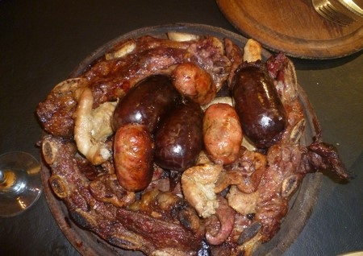

La parrilla de raul tuvo origen en Jujuy 278 para luego expandirse hasta la copar toda la esquina de la calle Santa Rosa, es sin dudas es uno de los más tradicionales en materia de carnes a la parrilla. Una vasta trayectoria acompaña cada parrillada que sirven así como cada vino que se descorcha en el lugar.
funciona en una vieja esquina del centro de la ciudad, remodelada pero que conserva el carácter tradicional que se quiere transmitir. Adentro, un salón acogedor y con vista a la parrilla propiamente dicha nos permite disfrutar de la comida en un clima absolutamente relajado.